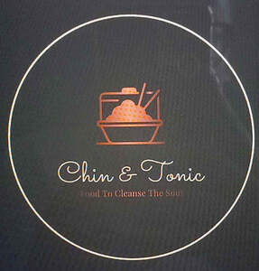

Trade Mark Journal No.2026/011 13 March 2026
UK00004347393 1 March 2026 (35,43)

- Class 35
- Wholesale services in relation to food cooking equipment; Retail services in relation to food cooking equipment; Business management assistance in the establishment and operation of restaurants; Business management of entertainment venues; Business advisory services relating to the setting up of restaurants; Online ordering services in the field of restaurant take-out and delivery; On-line ordering services in the field of restaurant take-out and delivery.
- Class 43
- Catering; Catering services; Mobile catering; Business catering services; Catering services for hospitality suites; Catering services for company cafeterias; Outside catering; Mobile catering services; Outside catering services; Catering services for the provision of food; Catering services specialising in cutting ham for weddings and private events; Providing food and drink catering services for convention facilities; Providing food and drink catering services for exhibition facilities; Catering of food and drinks; Food and drink catering for banquets; Catering for the provision of food and beverages; Catering services specialised in cutting ham by hand, for weddings and private events; Food and drink catering; Catering (Food and drink -); Catering services for conference centers; Consultancy services in the field of food and drink catering; Providing food and drink catering services for fair and exhibition facilities; Organisation of catering for birthday parties; Charitable services, namely providing food and drink catering; Catering services for the provision of food and drink; Office catering services for the provision of coffee; Food and drink catering for institutions; Catering for the provision of food and drink; Catering services specialising in cutting ham for fairs, tastings and public events; Catering services specialised in cutting ham by hand, for fairs, tastings and public events; Food and drink catering for cocktail parties; Providing restaurant services; Banqueting services; Restaurant services; Hospitality services [accommodation]; Take-away restaurant services; Restaurant services incorporating licensed bar facilities; Take-out restaurant services; Providing banquet and social function facilities for special occasions; Holiday planning services [accommodation]; Hotel restaurant services; Services for reserving holiday accommodation; Accommodation services; Services for providing food; Mobile restaurant services; Ramen restaurant services; Bistro services; Take-away food services; Bar and restaurant services; Restaurant and bar services; Reservation and booking services for restaurants and meals; Consultancy services relating to hotel facilities; Takeaway food services; Providing accommodation for functions; Accommodation services for functions; Accommodation services for meetings; Providing food and drink for guests in restaurants; Personal chef services; Providing accommodation for meetings; Restaurant services for the provision of fast food; Serving food and drink for guests in restaurants; Brasserie services; Corporate hospitality (provision of food and drink); Tourist camp services [accommodation]; Booking agency services for holiday accommodation; Hospitality services [food and drink]; Charitable services, namely providing temporary accommodation; Arranging of wedding receptions [food and drink]; Food preparation services; Snack-bar services; Travel agency services for reserving hotel accommodation; Reservation services for accommodation; Tour operator services for the booking of temporary accommodation; Tourist agency services for booking accommodation; Arranging of wedding receptions [venues]; Hotel accommodation reservation services; Providing temporary lodging for guests; Consultancy services relating to food preparation; Services for providing food and drink; Booking agency services for hotel accommodation; Agency services for booking hotel accommodation.
Tenisha Monique Chin